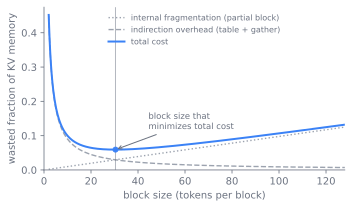

显存与调度
服务引擎的加速器显存，大半都花在一个不断长大的对象上，也就是 KV 缓存；调度上的精力，则大半花在判断哪些请求该共享一次前向传播。本章把一个故事讲成四步：这个领域每采用一种机制，都是为了补上一种机制留下的窟窿。以迭代为粒度做批处理，显存便碎片化；像操作系统那样给缓存分页，前缀就想被共享；在一棵树里共享前缀，两个阶段又要为同一个设备相争；把两个阶段拆到不同机器上，一次网络传输又作为新代价冒了出来。沿着这条线走下来，就能看清现代引擎为何以单个解码步为粒度做批处理，为何用固定页来管理 KV 缓存，为何要维护一棵共享前缀的树，以及最新的系统为何把预填充和解码分开。
一个问题的两个事实
第 16 章 点出了生成的两个阶段，以及它们截然相反的形态。预填充用一次计算受限的传播读入整段提示词，产出第一个词元。解码随后每次前向传播只发出一个词元，每一步都要为一个新查询读入整个 KV 缓存，于是解码是显存带宽受限的，且每个请求的批大小是一，除非引擎跨请求做批处理。这两个阶段的显存代价和调度代价，并不是两件分开的事。它们是同一个资源问题的两个面，把它们放在一起处理，正是本章的用意。
显存这一面的事实是：KV 缓存很大，按请求各占一份，且每生成一个词元就在每层多占一个槽位。对一个长度为 的请求，缓存持有 个值，其中因子二对应键与值。在一个有数十亿参数的模型上，权重是固定的，但几十个并发的长上下文请求，其缓存可以超过权重本身，而且它随请求的到达与结束而出现、消失。朴素的引擎会预先为每个请求保留最大可能的长度，结果让那些提早结束的请求白白浪费掉大半保留量，还把批大小压到远低于硬件本可容纳的水平。
调度这一面的事实是：请求的长度各不相同。在一批生成里，一个请求可能跑到二十个词元就停，另一个却要跑到两千个。若引擎调度一批之后非要等每个成员都结束才放入下一批，那些短请求就只能在被填充的批里空转，干等着最长的那个解码完，而新到达的请求得排在整批之后。吞吐于是塌缩到最慢成员的节奏，新到达者的延迟则等于它前面那一整批的拖尾。
所以问题分两半，本章一并处理：把 KV 缓存装好，别浪费显存；把前向传播调度好，别让任何请求为另一个请求的长度而等。接下来四节各讲一种机制，而每一种机制之所以站得住，靠的都是修好上一种机制弄坏的东西。
以迭代为粒度，而非请求
第一步，是把调度的粒度从请求换成迭代。一次迭代就是一次前向传播，把每个活跃请求都向前推进一个词元。每次迭代之后，调度器都可以随手移除刚发出停止词元的请求，再把等待中的请求放进下一次迭代的批里。这就是连续批处理，也叫迭代级调度，由 Orca 提出 (Yu et al. 2022)。批不再是一个同生共死的固定队列，而成了一个在活跃集合上滑动的窗口，每一步都重新填满。一个在第二十个词元结束的请求会立刻离开，它的槽位随即被复用，而不必把整批填充到最长成员结束。图 17.1 画出了这个循环：每次迭代都退役刚发出停止词元的请求，并放入等待中的请求，于是批的构成每一步都在变。
flowchart TB
waiting["等待队列"]
form["从活跃集合组成批"]
fwd["一次前向传播，每个请求推进一个词元"]
sample["每个请求采样一个词元"]
done{"发出停止词元？"}
retire["退役请求，释放其块"]
waiting -->|准入| form
form --> fwd --> sample --> done
done -->|是| retire
done -->|否，留在活跃集合| form
retire -.->|槽位被复用| form在 Orca 之前，服务系统是以请求为粒度做批处理的：组成一批，跑到完成，返回结果。这是请求级调度，凡是填充队列式的设计都逃不掉那种静态批处理的毛病，它也一样。Orca 的贡献，是把调度换成迭代粒度，并把批做成一个活的集合，每一步重新填满，正是这一处改动，让服务引擎能在请求长度参差不齐时仍把加速器喂饱 (Yu et al. 2022)。Orca 还引入了选择性批处理，即把计算中那些能跨不同长度请求批处理的部分批起来，而注意力则按请求各自运行。
连续批处理解决了调度这一面，又立刻把显存这一面以更尖锐的形式逼了出来。如果每次迭代都要做准入，引擎就得在每次迭代里，为最终长度还不知道的请求分配并释放 KV 缓存空间。给每个请求保留一段连续的最大长度缓冲，这个看似自然的方案，会让显存碎片化：一个结束的请求留下的空洞，对下一个请求来说太小；而保留却没用上的尾部空间，纯属死重。vLLM 论文里的测量表明，这种碎片化与过度保留造成的浪费，在此前的系统中占去了缓存显存的大半 (Kwon et al. 2023)。下一步的存在，就是为了把它收回来。
把缓存当作虚拟内存
第二步从操作系统借来虚拟内存，消掉这份浪费。其洞见是：KV 缓存恰好就是虚拟内存当年为之而生的那类对象，一种按进程的分配，增长不可预测，又必须在不碎片化的前提下共享一个固定的物理池。PagedAttention (Kwon et al. 2023) 把 KV 缓存存进固定大小的块，每块装固定数量词元的键与值，并让一个请求的逻辑块序列经由一张块表，映射到物理上并不连续的块。注意力核被改写成通过这张表去搜集键与值，而不再假定连续。如今分配是按块的，不是按请求的：一个请求在当前块填满时追加一块来增长，显存以块为粒度在所有请求间共享，唯一的内部浪费只剩那个不满的末块。这个类比丝丝入扣。块就是页，块表就是页表，引擎就是一个内存管理器，随着序列增长与结束分发并回收页。图 17.2 画出了这层间接：一个请求的逻辑词元块序列，经由一张块表，映射到共享池中物理上分散的块。
flowchart LR
subgraph logical["逻辑 KV（每请求）"]
t0["词元 0-15"] --> t1["词元 16-31"] --> t2["词元 32-47"]
end
subgraph table["块表"]
e0["槽 0"]
e1["槽 1"]
e2["槽 2"]
end
subgraph phys["物理块（共享池）"]
b2["块 2"]
b7["块 7"]
b9["块 9"]
end
t0 -.-> e0 -.-> b7
t1 -.-> e1 -.-> b2
t2 -.-> e2 -.-> b9vLLM 就是建在这个思想上的服务系统，它报告在同等延迟下取得上一代两到四倍的吞吐，靠的正是把可达的批大小抬了上去 (Kwon et al. 2023)。这份抬升，来自浪费被挪去了哪里。图 17.3 对比了两种方案：给每个请求保留一段最大长度缓冲，利用率会停在平均长度与最大长度之比，于是一个以短请求为主的工作负载会把池困住大半；而分页只持有已实现的长度，外加一个不满的末块，使利用率无论长度分布多散都接近 1，可达批大小正是因此抬高的。vLLM 的其余部分，块管理器、压力下把块换出到主机内存、写时复制的共享，都顺着「把缓存当作分页的虚拟内存」这一点推了出来。其结果，重置了开放服务的吞吐基线。它还推开了一扇门：缓存一旦分页、块一旦可以共享，请求之间相同的内容就无需再被存储或计算两次。

共享前缀
分页让共享变得廉价，这是第三步。两个开头相同的请求，无论开头是共享的系统提示词还是一段少样本前言，都会为那段前缀算出相同的键与值。在分页之下，它们的块表可以为共享前缀指向同一批物理块，只在词元分岔之处才分岔，并在某一方写入共享块时做写时复制。悬而未决的是另一个问题：在一条重叠方式任意的请求流里，怎样自动找出那些可共享的前缀。RadixAttention (Zheng et al. 2024) 是 SGLang 运行时的前缀缓存机制，它给出的答案是：把所有缓存下来的前缀，存进一棵以词元序列为键的基数树（radix tree），配上最近最少使用（LRU）逐出。新请求沿树而下，找到自己提示词的最长已缓存前缀，复用那些块，只去计算尚未缓存的后缀。基数树把前缀复用从一种特例，即为某个已知的共享提示词手工处理的情形，变成运行时对所有流量默认就做的事。前缀缓存把真实工作负载里反复出现的结构，共享的系统提示词、多轮对话历史、分叉的智能体调用，从被重算的计算变成了被复用的计算。图 17.4 画出两个请求共享一段系统提示词前缀：它们一直到分叉点都指向同一批已缓存的块，只计算各自分岔的后缀。
分页和前缀共享都默认预填充与解码共享一个设备、一个批，而这个默认正是下一个要被打破的。让两者跑在同一批里，意味着一次长预填充会卡住排在它后面的那些解码，因为这两个阶段想要的并行方式和批形态都不一样。一条出路是保留单个设备，围绕这种干扰来调度。Sarathi-Serve (Agrawal et al. 2024) 就在单个设备之内解决它，办法是把预填充切成块，再把每个块和进行中的解码合并起来，让长预填充永远卡不住解码。第四步走的是相反的路。
拆分两个阶段
第四步把两个阶段分到不同的硬件上。预填充是计算受限的、突发的；解码是显存带宽受限的、平稳的。预填充／解码分离把预填充跑在一组机器上，把解码跑在另一组上，两者之间用网络传输 KV 缓存。每一组都按自己那个阶段来配置和并行，谁也不干扰对方的延迟。DistServe (Zhong et al. 2024) 为有效吞吐量（goodput）优化放置，所谓有效吞吐量，是指同时满足预填充的首词元时间（TTFT）目标和解码的每词元时间（TPOT）目标的请求速率。Mooncake (Qin et al. 2024) 则把整个架构都围着 KV 缓存来搭，把集群里的 CPU DRAM 与 SSD 汇成一个分离的缓存，由预填充写、由解码读。图 17.5 勾出这一拆分：提示词进入预填充池，产出的 KV 缓存跨过网络，解码池读它来发出词元，每一组都按自己那个阶段来配置和并行。
flowchart LR
prompt["提示词"] --> pp
subgraph prefillpool["预填充池（计算受限）"]
pp["读入整段提示词，一次传播"]
ft["第一个词元"]
kv["构建 KV 缓存"]
pp --> ft
pp --> kv
end
kv -->|"KV 缓存经网络传输"| dp
subgraph decodepool["解码池（带宽受限）"]
dp["读取 KV 缓存"]
step["每次传播发出一个词元"]
dp --> step
step -->|追加到 KV| dp
end
step --> out["输出流"]这是最近的一步，它把前三步共享的那个默认翻了过来。两条线都还活跃。设备内这条线，以分块预填充调度为代表 (Agrawal et al. 2024)，保留一个资源池，靠精细调度取胜；分离那条线 (Zhong et al. 2024; Qin et al. 2024) 则接受一次 KV 缓存的网络传输，换来干扰被彻底消除。哪一条胜出，至今没有定论。
是把预填充与解码分离，还是把它们留在同一设备上、围绕干扰来调度，至今没有定论。分离消除了阶段间的干扰，让每个池都能独立扩展与并行，而在长提示词的大规模场景下，所报告的有效吞吐量增益相当可观 (Zhong et al. 2024)。但它要在每个请求上为 KV 缓存付一次网络传输，需要足够的跨机带宽来掩盖这次传输，还让路由与故障处理变复杂了。同位（colocation）一派以分块预填充调度为代表 (Agrawal et al. 2024)，主张精细的设备内调度，能用零头的运维代价、且不付传输，就拿到大部分收益。正确答案取决于提示词长度、首词元时间与每词元时间的目标，以及互连：没有哪种设置能让一种方法在所有工作负载上通吃。
上游的注意力设计，决定了本章这份活有多难。KV 缓存的大小，也就是分页存在所要管理的那一项，由 第 6 章 中选定的 KV 头数固定下来。MQA 与 GQA 让多个查询头共享 KV 头，从而缩小这一项，第 7 章 的潜在注意力把它压得更小。每词元的缓存越小，同样的显存里就能装下越多序列，可达的批大小随之抬高，而这正是连续批处理为吞吐所拉动的那根杠杆。一个为缓存大小而选定的注意力变体，实际上是在低一层做出的一个调度决策。
每一步的代价
这条级联换来四份收益，每一份都带着一个被点名的代价。
- 分页中的块大小。 小块在不满的末块上浪费很少、共享粒度也细，但会成倍增加块表项与每核的搜集开销。大块削减这份开销，却浪费更多尾部显存、共享也更粗。图 17.6 把两种代价对块大小作图：内部碎片随块增大而上升，间接开销随之下降，两者之和是一条带内部最优点的 U 形曲线。块大小是一个调节旋钮，不是一个常数，正确值取决于典型序列长度以及工作负载有多少前缀共享。

试着改变 L，即典型序列长度，看最优块大小随之移动，并与平方根公式相符。
import numpy as np
import matplotlib.pyplot as plt
L = 512 # typical sequence length, in tokens
w_frag = 1.0 # cost per wasted token in the partial final block
w_indir = 4.0 # cost of one block-table entry and its gather
b = np.arange(1, 257)
frag = w_frag * (b / 2) # waste grows with block size
indir = w_indir * (L / b) # indirection falls as 1/block
total = frag + indir
b_star = b[np.argmin(total)]
b_formula = np.sqrt(2 * w_indir * L / w_frag)
print("argmin block size:", b_star, " sqrt formula:", round(b_formula, 1))
plt.plot(b, frag, "--", label="fragmentation (b/2)")
plt.plot(b, indir, "--", label="indirection (L/b)")
plt.plot(b, total, label="total")
plt.axvline(b_star, color="k", lw=0.8)
plt.xlabel("block size (tokens)"); plt.ylabel("cost"); plt.legend(); plt.show()
- 前缀缓存保留与显存。 在基数树里保留更多前缀，会为有共享结构的工作负载抬高命中率，但缓存要和活跃请求争夺同一批物理块。显存一紧，引擎就得逐出已缓存的前缀来接纳新活，所以前缀缓存是一场赌注，赌的是复用能赶在那些块被回收之前先兑现。重叠很少的工作负载，付了记账开销，收回来的却很少。
- 分离与同位。 分离消除干扰、让每个阶段独自扩展，代价是每个请求一次 KV 缓存传输，以及掩盖它所需的带宽。带分块预填充的同位保留一个池、一条无传输的路径，代价是调度复杂度和一些残余干扰。交叉点由提示词长度与延迟目标决定。
- 批处理中的吞吐与延迟。 更大的连续批抬高吞吐，却拉长每次迭代，于是其中每个请求的每词元时间都被抬高。准入因而成了一个延迟旋钮：引擎可以为保护拖尾延迟而给批大小封顶或留出余量，拿一点吞吐去换。
引擎是一个循环加一个内存管理器
这四步落到代码里，都归结为一个循环加一个内存管理器。循环是迭代级的：每一步，调度器挑出要运行的那组请求，模型对它们跑一次前向传播，采样器各产出一个词元，结束的请求被退役，等待的请求被放入下一步。在 vLLM 中这是引擎步（vllm.LLMEngine.step，vllm/engine/llm_engine.py），它调用调度器来组成批、调用模型运行器来执行。调度器为运行中、等待中、被换出的请求各维护一个队列，并随缓存块的分配与回收，在这些队列之间移动请求。
内存管理器掌管块池。它维护一张物理块的空闲表，以及一张按请求的块表，把逻辑位置映射到物理块。分配在当前块填满时追加一块；释放在请求完成时把它的块还给池。压力之下，管理器可以抢占一个请求，要么稍后重算它的缓存，要么把它的块换到主机内存再换回，这是分页换出到磁盘在服务上的对应。注意力核通过块表读取，于是物理布局对模型其余部分始终不可见。至于前缀共享，新请求的块表会被初始化为指向它最长匹配前缀的已缓存块，并带一个引用计数，使一个共享块只在它最后一个使用者结束时才被释放，并在越过共享点的首次写入时被复制。
有两个运维现实值得点名。其一，不满的末块是分页留下的唯一内部碎片，于是当序列相对块大小变长时，平均浪费随之下降，这正是长上下文工作负载最受益于分页的原因。其二，前缀缓存命中率由工作负载塑形：一个带固定系统提示词的对话服务，或一个反复重发长工具前言的智能体循环，可以看到自己大半的预填充由缓存供给，而一条互不相关的单轮提示词流则几乎看不到。给命中率、可达批大小与抢占率装上度量，正是运维者读出内存管理器是否在赢的办法。
延伸阅读
- Yu et al., “Orca: A Distributed Serving System for Transformer-Based Generative Models,” 2022. usenix.org
- Kwon et al., “Efficient Memory Management for Large Language Model Serving with PagedAttention” (vLLM), 2023. arXiv:2309.06180
- Zheng et al., “SGLang: Efficient Execution of Structured Language Model Programs” (RadixAttention), 2024. arXiv:2312.07104
- Zhong et al., “DistServe: Disaggregating Prefill and Decoding for Goodput-optimized Large Language Model Serving,” 2024. arXiv:2401.09670
- Qin et al., “Mooncake: A KVCache-centric Disaggregated Architecture for LLM Serving,” 2024. arXiv:2407.00079
- Agrawal et al., “Taming Throughput-Latency Tradeoff in LLM Inference with Sarathi-Serve” (chunked prefill), 2024. arXiv:2403.02310